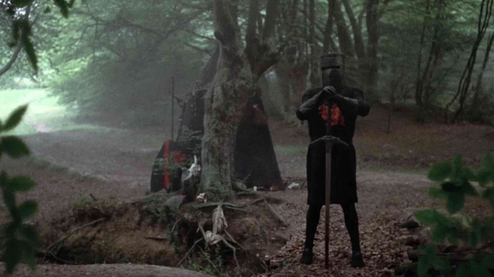
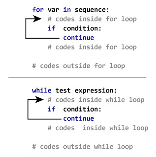

Code
# Define x
x = 4
# Evaluate condition
if x > 0 :
print('x is a positive number.')x is a positive number.⬅️ Previous Session | 🏠 Course Home | 🚦 EDS217 Vibes | ➡️ Next Session |

The control flow of a program refers to the order in which its code is executed. In Python, control flow is regulated by conditional statements, loops, and functions. This session will cover if statements, for loops, and while loops; functions will be covered in a later session.
Session 1-3 Control Flow Statementsif statements
if statements
if… elif… else
or, and, in
if statements
for loops
for loops
for loops
while loops
break statements
continue statements
We will work through this notebook together. To run a cell, click on the cell and press “Shift” + “Enter” or click the “Run” button in the toolbar at the top.
🐍 This symbol designates an important note about Python structure, syntax, or another quirk.
▶️ This symbol designates a cell with code to be run.
✏️ This symbol designates a partially coded cell with an example.
We’ve already learned about boolean operators for evaluating numerical conditions and returning True or False. if statements are code blocks used for similar simple comparisons, or for more complex or multiple comparisons.
Code blocks are created by indenting (using a tab or 4 spaces) lines of code following an if statement. If the condition is met, the program will proceed through the indented code block. If not, it will move on to the next unindented line.
Example if statement
x = 1
if x > 0:
print('x is a positive number.')>>> x is a positive number.
Run the following cell, changing the value of x to be negative or positive to demonstrate how the if statement works.
# Define x
x = 4
# Evaluate condition
if x > 0 :
print('x is a positive number.')x is a positive number.x = 4
x < 0FalseThe if statement can be used in conjunction with the else command to instruct the program to do something different if the condition is not met.
y = -3218
if y > 0:
print('y is a positive number.')
else:
print('y is not a positive number.')y = -3218
if y > 0:
print('y is a positive number.')
else:z
print('y is not a positive number.')y is not a positive number.>>> y is not a positive number.
To evaluate multiple conditions, add the elif command after the if statement. Infinite elif statements can be included.
y = -3218
if y > 0:
print('y is a positive number.')
elif y == 0:
print('y = 0')
else:
print('y is a negative number.')>>> y is a negative number.
# Experiment with if, elif, and else statements.
n_peaches = "bad"
pie_size = 10
if pie_size == 8:
n_peaches = 6
elif pie_size == 10:
n_peaches = 9
elif pie_size == 12:
n_peaches = 11
else:
print("Not a valid pie size")
if n_peaches == "bad":
print(f"You need to use an 8, 10, or 12 in pan")
else:
print(f"You are going to need {n_peaches} peaches.")
You are going to need 9 peaches.There are several operators that can be used within if statements to evaluate more complex conditions. The in operator is used to check if an object exists within an iterable object container, such as a list.
aminoacids = ['histidine', 'isoleucine', 'leucine', 'lysine', 'methionine',
'phenylalanine', 'threonine', 'tryptophan', 'valine', 'alanine',
'arginine', 'asparagine', 'aspartate', 'cysteine', 'glutamate',
'glutamine', 'glycine', 'proline', 'serine', 'tyrosine']
org_compound = 'cysteine'
if org_compound in aminoacids:
print(org_compound.capitalize() + ' is an amino acid.' )
else:
print(org_compound.capitalize() + ' is not an amino acid.')>>> Cysteine is an amino acid.
▶️ <b> Run the cell below. </b># List of amino acids
aminoacids = ['histidine', 'isoleucine', 'leucine', 'lysine', 'methionine',
'phenylalanine', 'threonine', 'tryptophan', 'valine', 'alanine',
'arginine', 'asparagine', 'aspartate', 'cysteine', 'glutamate',
'glutamine', 'glycine', 'proline', 'serine', 'tyrosine']
org_compound = 'proline'
if org_compound in aminoacids:
print(org_compound.capitalize() + ' is an amino acid.' )
else:
print(org_compound.capitalize() + ' is not an amino acid.')Proline is an amino acid.The and and or operators can be used to build more complex if statements based on multiple expressions. The and operator is used to specify that multiple conditions must be satisfied.
▶️ <b> Run the cell below. </b>essential = ['histidine', 'lysine', 'threonine', 'tryptophan',
'valine', 'methionine', 'leucine', 'phenylalanine']
aromatic = ['phenylalanine', 'tryptophan', 'tyrosine']
aa = 'tryptophan'
if aa in aromatic and aa in essential:
print(aa.capitalize() + ' is an essential, aromatic amino acid.')
elif aa in essential:
print(aa.capitalize() + ' is an essential, non-aromatic amino acid.')
elif aa in aromatic:
print(aa.capitalize() + ' is a non-essential, aromatic amino acid.')
elif aa in aminoacids:
print(aa.capitalize() + 'is a non-essential amino acid.')
else:
print(aa.capitalize() + ' is not an amino acid.')Tryptophan is an essential, aromatic amino acid.The or operator is used to write an if statement where one of multiple conditions must be met.
▶️ <b> Run the cell below. </b>charged = ['arginine', 'lysine', 'aspartate', 'glutamate']
polar_un = ['glutamine', 'asparagine', 'histidine', 'serine', 'threonine', 'tyrosine', 'cysteine']
if aa in charged or polar_un:
print(aa.capitalize() + ' is a polar amino acid.')
elif aa in aminoacids:
print(aa.capitalize() + ' is a non-polar amino acid.')
else:
print(aa.capitalize() + ' is not an amino acid.')Tyrosine is a polar amino acid.if statements
if statements can build on one another to perform specific actions based on each condition by nesting if statements. For example, the previous cell could be re-written as follows:
if aa in aminoacids:
if aa in charged or polar_un:
print(aa.capitalize() + ' is a polar amino acid.')
else:
print(aa.capitalize() + ' is a non-polar amino acid.')
else:
print(aa.capitalize() + ' is not an amino acid.') While this is a trivial example, nested if statements can be quite useful when inside a program as they allow the program to skip to the end if the first condition is not satisfied.
# Experiment with nested if statements.
if aa in aminoacids:
if aa in charged or polar_un:
print(aa.capitalize() + ' is a polar amino acid.')
else:
print(aa.capitalize() + ' is a non-polar amino acid.')
else:
print(aa.capitalize() + ' is not an amino acid.') Tryptophan is a polar amino acid.peaches=10
if peaches > 0:
x=1
else:
print(sdfsdg)
for loopsfor loops are the most commonly used type of loop and are extremely useful. for loops are used to iterate or loop through any object capable of returning its members one at time, i.e. an iterable object.
🐍 <b>Note.</b> The <b>iterator</b> in a <code>for</code> loop is a temporary variable used to store each value in the iterable object. The iterator is defined in the <code>for</code> loop syntax as follows:for <ITERATOR> in <ITERABLE>:
do something to iteratorThe name of the iterator should reflect the nature of the list. i is commonly used as an enumerator or counter variable and should be avoided for other uses.
A generic counter for loop can be generated using the range() function.
for i in range(4):
print(i + 1)
>>> 1
2
3
4for i in range(4):
print(i+1)1
2
3
4for loops are commonly used to iterate through lists. As with the generic range() for loop, the iterator is assigned the next value from the list at the end of the indented code block.
for aa in aminoacids:
print(aa)
>>> histidine
isoleucine
leucine
lysine
methionine
phenylalanine
threonine
tryptophan
valine
alanine
arginine
asparagine
aspartate
cysteine
glutamate
glutamine
glycine
proline
serine
tyrosinefor aa in aminoacids:
print(aa)histidine
isoleucine
leucine
lysine
methionine
phenylalanine
threonine
tryptophan
valine
alanine
arginine
asparagine
aspartate
cysteine
glutamate
glutamine
glycine
proline
serine
tyrosineThe enumerate() function can be used in a for loop to keep track of the index of the iterator. This can be useful for keeping track of the number of iterations completed, accessing other elements in the same list based on their relative index (e.g. the value immediately following the current iterator value), or accessing elements in another list based on the iterator’s index.
gases = ['N2', 'O2', 'Ar', 'H2O', 'CO2']
for i,gas in enumerate(gases):
rank = i + 1
print('The #%d most abundant gas in the atmosphere is %s.' %(rank,gas))>>> The #1 most abundant gas in the atmosphere is N2.
The #2 most abundant gas in the atmosphere is O2.
The #3 most abundant gas in the atmosphere is Ar.
The #4 most abundant gas in the atmosphere is H2O.
The #5 most abundant gas in the atmosphere is CO2.
# Define list of atomic masses of 6 most abundant elements
gases = ['N2', 'O2', 'Ar', 'H2O', 'CO2']
atomic_mass_organics = [12.011, 1.00784, 14.0067, 15.999, 30.97376, 32.065] # g/mol
gas_mass = [28, 32, 39, 18, 44]
for i,gas in enumerate(gases):
this_mass = gas_mass[i]
print(f"the atomic mass of {gas} is approximately {this_mass}")
# Iterate through org_elements + print the atomic mass of each elementthe atomic mass of N2 is approximately 28
the atomic mass of O2 is approximately 32
the atomic mass of Ar is approximately 39
the atomic mass of H2O is approximately 18
the atomic mass of CO2 is approximately 44To iterate through multiple lists at the same time without indexing, use the zip() function.
gas_frac = [0.78084, 0.209476, 0.00934, 0.0025, 0.000314]
gas_molar_mass = [14.0067, 15.999, 39.948, 18.01528, 44.01]
mass_atmosphere = 5.148e21 # grams
n_a = 6.022e23 # Avogadro's number
for frac,mol_mass in zip(gas_frac,gas_molar_mass):
mass = frac * mass_atmosphere
molecules = (mass / mol_mass ) * n_a
print(molecules)
>>> 1.7282458205744395e+44
4.0590156271366957e+43
7.248215956743767e+41
4.302078013774973e+41
2.211859664621677e+40# Define list of atomic masses of 6 most abundant elements
gases = ['N2' , 'O2' , 'Ar' , 'H2O' , 'CO2' ]
masses = [28 , 32 , 39 , 18 , 44 ]
names = ['Nitrogen', 'Oxygen', 'Argon', 'Water', 'Carbon Dioxide']
for i,(gas,mass,name) in enumerate(zip(gases, masses, names)):
print(f"{i+1}: The atomic mass of {name} ({gas}) is approximately {mass}")1: The atomic mass of Nitrogen (N2) is approximately 28
2: The atomic mass of Oxygen (O2) is approximately 32
3: The atomic mass of Argon (Ar) is approximately 39
4: The atomic mass of Water (H2O) is approximately 18
5: The atomic mass of Carbon Dioxide (CO2) is approximately 44list(zip(gases, masses, names))[('N2', 28, 'Nitrogen'),
('O2', 32, 'Oxygen'),
('Ar', 39, 'Argon'),
('H2O', 18, 'Water'),
('CO2', 44, 'Carbon Dioxide')]The zip() function is nearly always used when each element of one list corresponds to an element in the same index position in another list. Therefore, it should mostly be used with two or more lists of the same length. If the lists do not have the same length, however, the number of iterations of the for loop will match the length of the shortest list.
The enumerate() and zip() functions can also be used together, if necessary, to keep track of the index position of iterators.
for i,(frac,mol_mass) in enumerate(zip(gas_frac,gas_molar_mass)):
gas = gases[i]
mass = frac * mass_atmosphere
molecules = (mass / mol_mass ) * n_a
print('There are ' + '{:.2e}'.format(molecules) + ' molecules of %s in the atmosphere.' % (gas))>>> There are 1.73e+44 molecules of N2 in the atmosphere.
There are 4.06e+43 molecules of O2 in the atmosphere.
There are 7.25e+41 molecules of Ar in the atmosphere.
There are 4.30e+41 molecules of H2O in the atmosphere.
There are 2.21e+40 molecules of CO2 in the atmosphere.
for loops
Like if statements, for loops can be nested to perform an operation multiple times for each iterator in the overall loop.
for aa in aminoacids:
vowels = 0
for letter in aa:
if letter in ['a', 'e', 'i', 'o', 'u']:
vowels = vowels + 1
print(aa.capitalize() + ' has ' + str(vowels) + ' vowels.')
>>> Histidine has 4 vowels.
Isoleucine has 6 vowels.
Leucine has 4 vowels.
Lysine has 2 vowels.
Methionine has 5 vowels.
Phenylalanine has 5 vowels.
Threonine has 4 vowels.
Tryptophan has 2 vowels.
Valine has 3 vowels.
Alanine has 4 vowels.
Arginine has 4 vowels.
Asparagine has 5 vowels.
Aspartate has 4 vowels.
Cysteine has 3 vowels.
Glutamate has 4 vowels.
Glutamine has 4 vowels.
Glycine has 2 vowels.
Proline has 3 vowels.
Serine has 3 vowels.
Tyrosine has 3 vowels.while loopswhile loops are used to repeatedly execute a block of code while a given condition is satisfied. The indented code block will be contiuously executed until the condition becomes False.
x = 0
while x < 4:
x = x + 1
print(x)
>>> 1
2
3
4while loops are often used for user input, which allows the program to “stall,” repeatedly prompting the user until an acceptable answer is input.
✏️ Try it. Run the following cell to see how a while loop works, inputing various answers that do not satisfy the condition before inputing the value that will end the loop.
# Define a blank string variable
user_txt = ""
# Wait for a specific answer, repeatedly asking for input until the condition is satisfied.
while user_txt != "42":
user_txt = input("What is the answer to life, the universe, and everything? ")🐍 <b>Note.</b> <code>while</code> loops can be infinite, so they should be used very judiciously. For example, imagine if instead of <code>x = x + 1</code> in the previous example, the code block executed in the <code>while</code> loop were <code>x = x - 1</code>:x = 0
while x < 4:
x = x - 1
print(x)
>>> -1
-2
-3
-4
-5
-6
... # and so onThis loop would never stop executing because the condition can never be met.
Sometimes it is necessary to terminate a loop iteration or the loop itself. The break and continue statements are used to escape loops.
break statements in Python are used to escape an entire loop based on a condition. In nested loops, a break will only exit out of one level.

▶️ <b> Run the cell below. </b>while True:
print("What is the answer to life, the universe, and everything? ")
option = input(" Your answer: ")
if option.isdigit():
if int(option) == 42:
print('You have solved the ultimate question.')
break
else:
print("Nope. Try again...\n")
else:
print("Nope. Try again...\n")What is the answer to life, the universe, and everything?
Nope. Try again...
What is the answer to life, the universe, and everything?
Nope. Try again...
What is the answer to life, the universe, and everything?
You have solved the ultimate question.continue statements are used to skip the remainder of the loop for a given iteration.

▶️ <b> Run the cell below. </b>for x in [47, 22.5342, 'four hundred eighty-two', 0, 72104, -932.14, 6, -23, 'eleven']:
# Check to see if value is a string
if type(x) == str:
# If so, skip to next iteration
continue
# Otherwise, divide by 2 and print
print(x/2)A list comprehension is a quick, concise way to generate a list. They are generally used to condense the generation of a list from a simple expression into one line of code.
For example, say you wanted a list of all the squares from 0 and 100. As we learned in Session 1-2, this could be accomplished as follows:
squares = []
for x in range(11):
squares.append(x**2)
print(squares)
>>> squares = [0, 1, 4, 9, 16, 25, 36, 49, 64, 81, 100]Using a list comprehension, the same list could be generated in a single line of code as follows:
squares = [x**2 for x in range(11)]
print(squares)
>>> squares = [0, 1, 4, 9, 16, 25, 36, 49, 64, 81, 100]List comprehensions are often combined with if statements. For example, the following line of code creates a list of all even numbers from 0 to 100.
evens = [x for x in range(101) if x%2 == 0]
print(evens)
>>> evens = [0, 2, 4, 6, 8, 10, 12, 14, 16, 18, 20,
22, 24, 26, 28, 30, 32, 34, 36, 38, 40,
42, 44, 46, 48, 50, 52, 54, 56, 58, 60,
62, 64, 66, 68, 70, 72, 74, 76, 78, 80,
82, 84, 86, 88, 90, 92, 94, 96, 98]✏️ Try it. Change the code above to create a list of all even squares from 0 to 100.